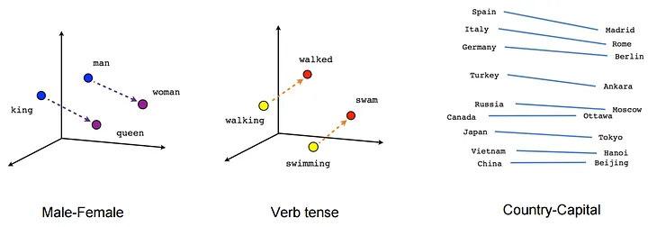
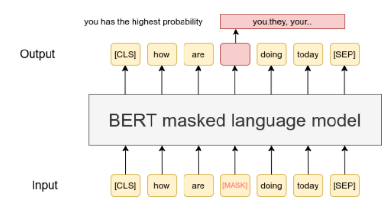
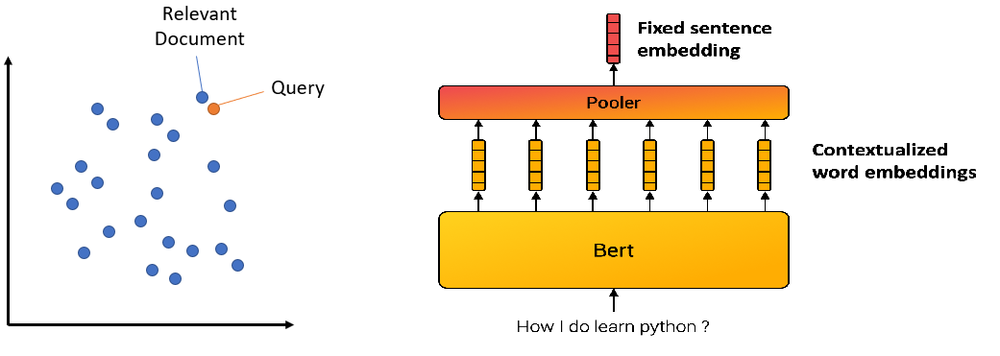

文本相似度原理
加载openAI key
1
2
3
4
5
6
7
8
9
10
|
import openai
import os
# 加载 .env 文件
from dotenv import load_dotenv, find_dotenv
_ = load_dotenv(find_dotenv(),verbose=True)
# 从环境变量中获得你的 OpenAI Key
openai.api_key = os.getenv('OPENAI_API_KEY')
print(openai.api_key)
|
1
2
3
4
5
6
7
8
9
10
11
12
13
14
15
16
17
18
19
20
21
22
23
24
25
26
27
28
29
30
31
32
33
34
35
36
37
|
import numpy as np
from numpy import dot
from numpy.linalg import norm
from langchain.embeddings import OpenAIEmbeddings
def cos_sim(a,b):
return dot(a, b)/(norm(a)*norm(b))
def l2(a,b):
x = np.asarray(a)-np.asarray(b)
return norm(x)
# model = OpenAIEmbeddings(model='text-embedding-ada-002')
model = OpenAIEmbeddings(model='text-embedding-3-small')
#oc_embeddings = OpenAIEmbeddings(model='text-embedding-ada-002')
query = "国际争端"
documents = [
"联合国就苏丹达尔富尔地区大规模暴力事件发出警告",
"土耳其、芬兰、瑞典与北约代表将继续就瑞典“入约”问题进行谈判",
"日本岐阜市陆上自卫队射击场内发生枪击事件 3人受伤",
"国家游泳中心（水立方）：恢复游泳、嬉水乐园等水上项目运营",
"我国首次在空间站开展舱外辐射生物学暴露实验",
]
query_vec = model.embed_query(query)
doc_vecs = model.embed_documents(documents)
print("Cosine distance:") #越大越相似
print(cos_sim(query_vec,query_vec))
for vec in doc_vecs:
print(cos_sim(query_vec,vec))
print("\nEuclidean distance:") #越小越相似
print(l2(query_vec,query_vec))
for vec in doc_vecs:
print(l2(query_vec,vec))
|
1
2
3
4
5
6
7
8
9
10
11
12
13
14
15
|
Cosine distance:
1.0000000000000002
0.3455584312568389
0.2816726969540693
0.1980973032260824
0.18847459412724374
0.17086387335398848
Euclidean distance:
0.0
1.1440643065345244
1.1986052753479193
1.2664143846102804
1.2739901144614556
1.2877392023589338
|
1
2
3
4
5
6
7
8
9
10
11
12
13
14
15
16
17
18
19
20
21
22
23
24
25
26
|
from langchain.embeddings import OpenAIEmbeddings
from sklearn.cluster import KMeans, DBSCAN
import numpy as np
texts = [
"这个多少钱",
"啥价",
"给我报个价",
"我要红色的",
"不要了",
"算了",
"来红的吧",
"作罢",
"价格介绍一下",
"红的这个给我吧"
]
model = OpenAIEmbeddings(model='text-embedding-ada-002')
X = []
for t in texts:
embedding = model.embed_query(t)
X.append(embedding)
#clusters = KMeans(n_clusters=3, random_state=42, n_init="auto").fit(X)
clusters = DBSCAN(eps=0.55, min_samples=2).fit(X)
for i,t in enumerate(texts):
print("{}\t{}".format(clusters.labels_[i],t))
|
0 这个多少钱
0 啥价
0 给我报个价
1 我要红色的
-1 不要了
-1 算了
1 来红的吧
-1 作罢
0 价格介绍一下
1 红的这个给我吧
什么是Embeddings
从词向量说起
从字面本身计算语义相关性是不够的
- 不同字，同义：「快乐」vs.「高兴」
- 同字，不同义：「上马」vs.「马上」
所以我们需要一种方法，能够有效计算词与词之间的关系，词向量（Word Embedding）应运而生
词向量的基本原理：用一个词上下文窗口表示它自身

词向量的不足
- 同一个词在不同上下文中语义不同：我从「马上」下来 vs. 我「马上」下来
基于整个句子，表示句中每个词，那么同时我们也就表示了整个句子

所以，句子、篇章都可以向量化
